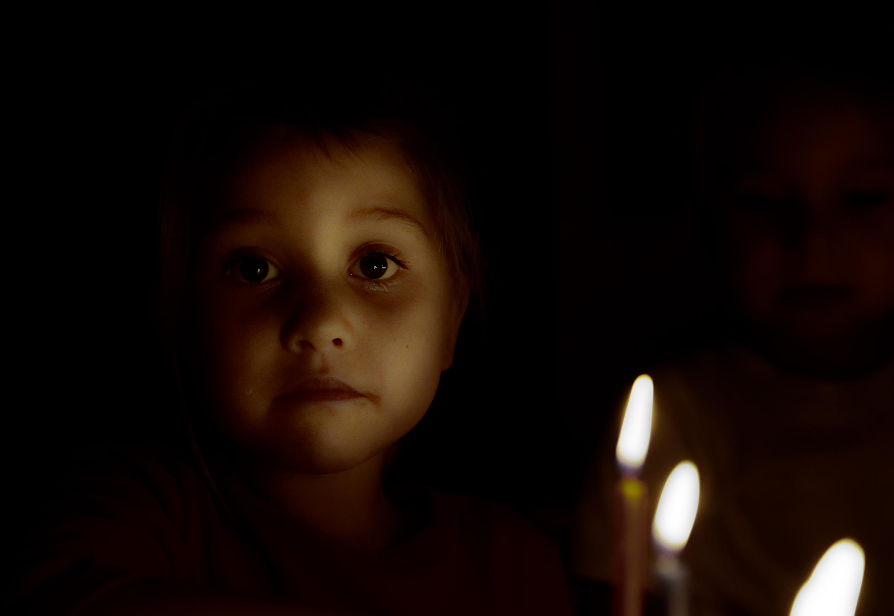
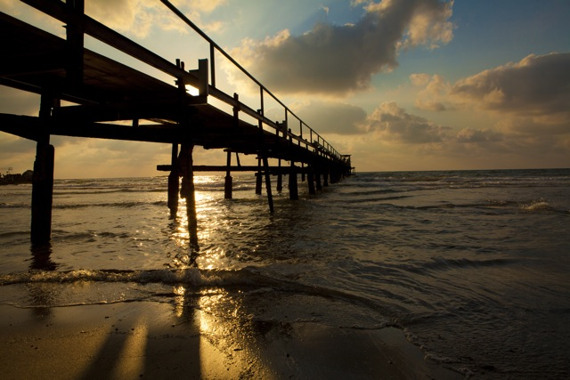
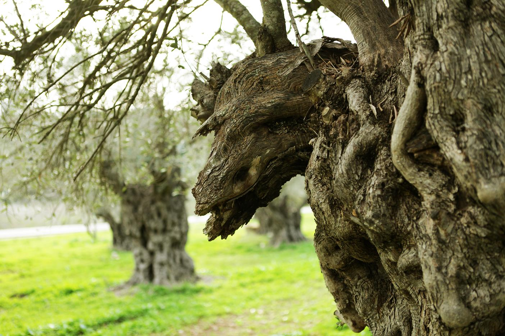
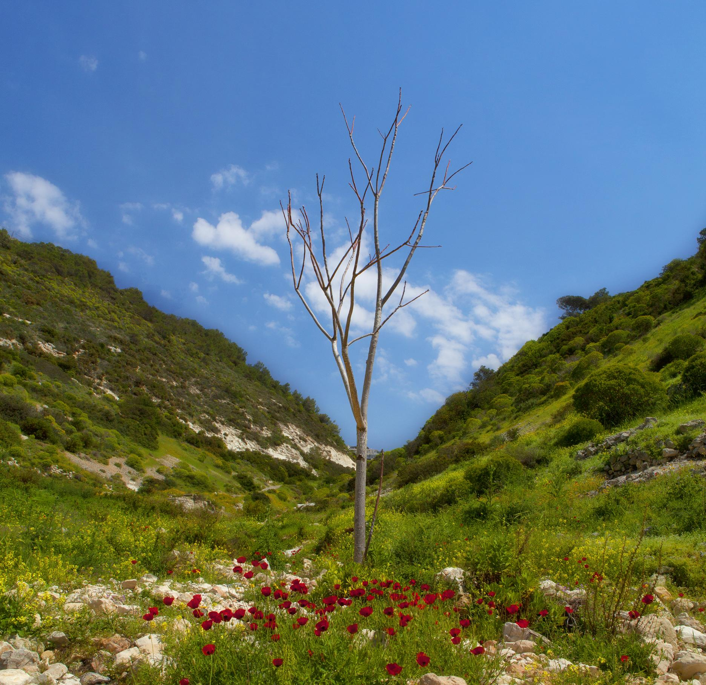

ПЕРВОЕ ВПЕЧАТЛЕНИЕ об Израиле
Мое первое впечатление - Израиль, наполненный светом. Много огней ночью, когда мы стали заходить на посадку, я увидел много огней. И потом вне зависимости от времени года - много света. Израиль, наполненный светом...
Вадим Бирман. Диктор телевидения и радио, журналист - репортер, автор фильмов. Отец четверых детей. В Израиль репатриировался в 2000 г. из Владивостока.




skype-сюжет. Вадим Бирман - ПЕРВОЕ ВПЕЧАТЛЕНИЕ об Израиле
Репортаж о Иерусалиме /Вадим Бирман/.
Ключевой город человеческой цивилизации, открыт и сокрыт от глаз любопытных туристов. Можем ли мы его понять и вправе ли не понимать…
другие его работы можно посмотреть здесь
автор: Эфраим Калиш /TORAART/